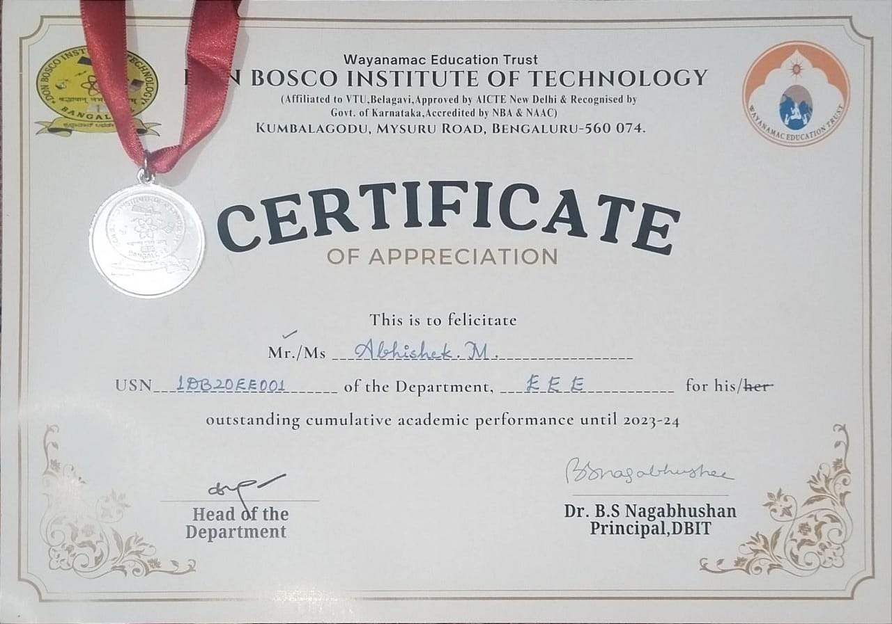

A proactive and analytical Software Quality Engineer with hands-on experience in both manual testing and the cutting-edge fields of GenAI and Large Language Model (LLM) testing. Proficient in Python and Java automation, I work with a modern toolchain that includes Selenium WebDriver, TestNG, Maven and Jenkins to streamline the CI/CD pipeline. I actively apply AI tools to enhance product quality and efficiency from automating test case generation to improving defect reporting. My curiosity for the next frontier in technology extends to research and development for Artificial General Intelligence (AGI) providing a unique perspective on testing complex systems. As a collaborative problem-solver I am committed to partnering with cross-functional teams to deliver exceptional solutions.
Core Skills
Manual QA & Process — test case design, defect lifecycle management, regression testing.
Conduct manual and scale testing to ensure product stability and performance.
Specialize in testing Generative AI and LLM-based systems.
Leverage Hydra framework and Jenkins to build automation pipelines.
Collaborate with cross-functional teams to deliver scalable solutions.
FreshersLab — Full Stack QA Engineer (Intern)
Aug 2023 — Oct 2023 · Bengaluru
Conducted manual testing and API validation.
Automated tests using Selenium (Python).
Tracked defects in YouTrack and worked with developers for resolution.
Projects
LMS Project — Learning Management System
Developed a Learning Management System with user authentication, course management and assignment submission features. Focused on test automation using Selenium and TestNG. Implemented SQL for backend validation and ensured UI responsiveness across devices.
Education
Don Bosco Institute of Technology (DBIT), Bengaluru B.E. Electrical & Electronics · Dec 2020 – Jun 2024 · 8.2/10
Bharathi Education College, Mandya PUC, Science · Aug 2018 – Mar 2020 · A Grade
Vishal English School, Bengaluru SSLC · Apr 2018 · A Grade
Certificates & Honors
⭐ Honors & Awards
Silver medal for Topper of the year in 2023Silver medal for Distinction in the year 20241st Rank in Government of Karnataka Science Talent Exam